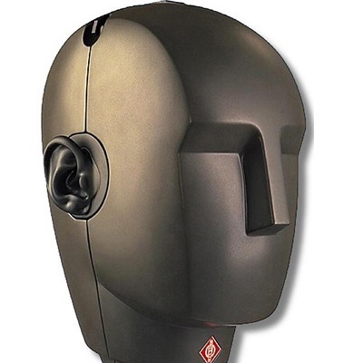
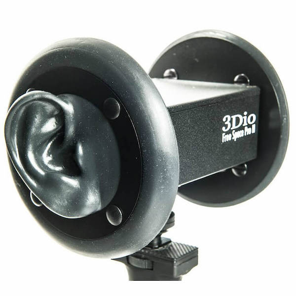
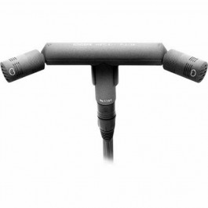
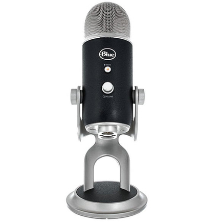
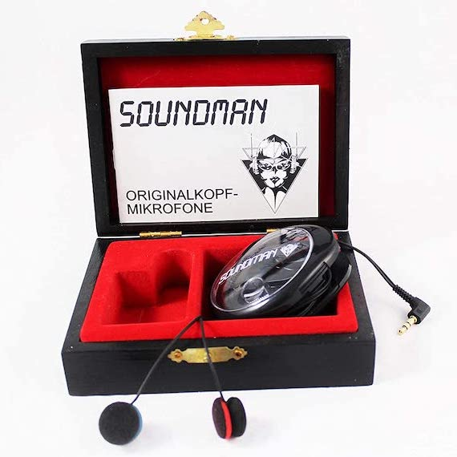

Microfoni
La registrazione binaurale (a due orecchi) è un metodo di registrazione tridimensionale del suono che ha il fine di ottimizzare la registrazione per il suo ascolto in cuffia, riproducendo il più fedelmente possibile le percezioni acustiche di un ascoltatore a 360° gradi.
Nella registrazione stereofonica il suono viene tradizionalmente ripreso da numerosi microfoni di prossimità e registrato su altrettante tracce separate, mentre l'acustica dell'ambiente di registrazione viene ripresa con una coppia di microfoni supplementari.
Scopri quali sono i microfoni più utilizzati per registrare i suoni dell'ASMR
-
Newmann KU 100
E' una testa artificiale che funziona da microfono in quanto riproduce perfettamente le forme delle orecchie che permettono un ascolto del suono binaurale. Esso garantisce una elevata somiglianza tra il suono ascoltato dal vivo e quello registrato.
Il suo costo si aggira sui € 7400.
-
3Dio Free Space
Il microfono binaurale Free Space è il più conveniente sul mercato ed è di alta qualità. E' costituito da capsule microfoniche integrate estremamente sensibili e silenziose. Viene usato in particolar modo per registrare un basso livello di rumore ed è eccellente per registrare strumenti con alte frequenze come piatti di batteria o chitarre acustiche strimpellate. Inoltre previene anche i suoni forti e violenti.
Questo microfono è sicuramente il più utilizzato dagli Youtubers avendo un costo che si aggira sui € 500.
-
Schoeps MSTC 64 U
Questo microfono è costituito da un corpo a forma di T con due amplificatori per microfono incorporati. Questo è probabilmente il miglior microfono stereo in commercio. In quasi tutte le situazioni produce un'immagine stereo uniforme, spesso senza necessità di microfoni ambientali.
Il suo costo è intorno ai € 3100.
-
Blue Yeti Pro
Yeti è un prodotto senza dubbio professionale. Il modello viene fornito con un sostegno in metallo satinato che si appoggia bene al tavolo e, grazie a due viti laterali, permette di posizionare liberamente il microfono poiché è pensato per ricevere l’audio da qualsiasi angolazione.
Il suo costo è di € 250.
-
Soundman OKM II Classic
Il microfono ha un segnale molto vicino al suono fisico, reale. L'effetto binaurale è molto evidente ma diventa molto caotico quando ci sono più sorgenti sonore, infatti il grande lato negativo di questi microfoni è il rumore di fondo che viene captato.
Il loro costo è di € 150.